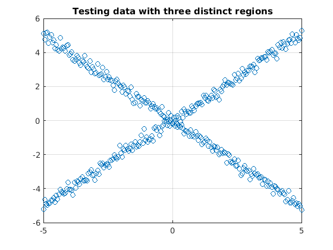
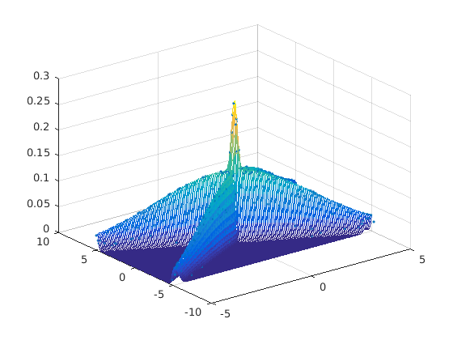
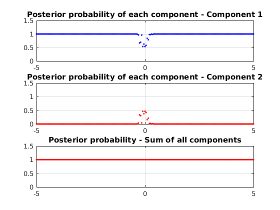
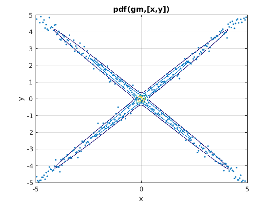
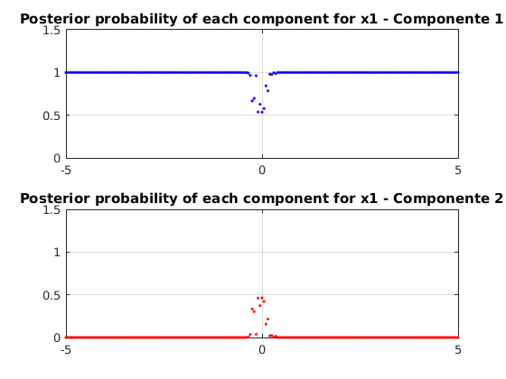
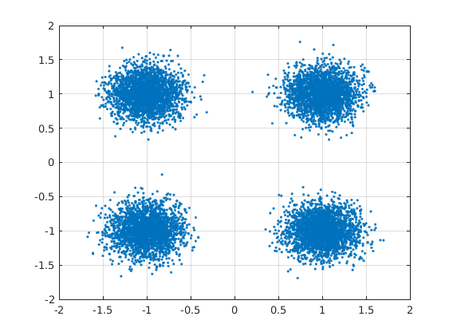
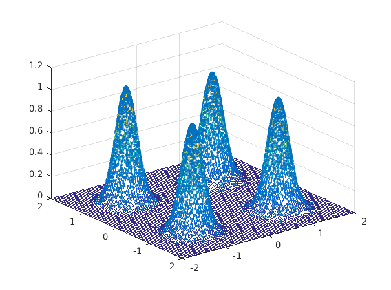
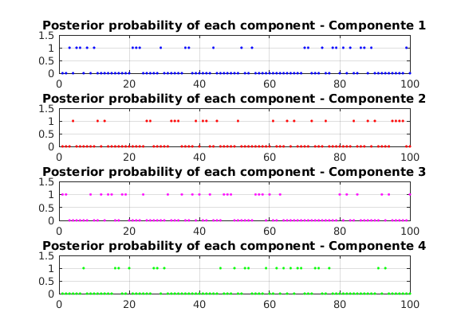

Contents
Fitting Gaussian Mixtures using matlab routine
clear all
close all
x = -5:0.05:5;
len = length(x);
noise_var = 0.2;
y1 = -x + noise_var*randn(size(x));
y2 = x + noise_var*randn(size(x));
x = [x, x];
y = [y1, y2];
figure(1)
plot(x,y, 'o')
title('Testing data with three distinct regions')
grid
train_set = [x; y]';

My GMM
number_of_components = 2;
mix_prob = (1/number_of_components)*ones(1, number_of_components);
mix_cov = repmat(eye(size(train_set, 2)), 1, 1, number_of_components);
mix_mean = repmat(mean(train_set, 1), 1, 1, number_of_components);
mix_mean(:, :, 1) = mean(train_set(1:len, :),1);
mix_mean(:, :, 2) = mean(train_set(len+1:end, :),1);
mix_cov(:, :, 1) = cov(train_set(1:len, :));
mix_cov(:, :, 2) = cov(train_set(len+1:end, :));
EM algorithm
[mix_prob, mix_cov, mix_mean] = gmm_em(train_set, mix_prob, mix_cov, mix_mean, 0, 1e3);
Calculating the posterior probabilities and plotting
[x_grid, y_grid] = meshgrid(-5:0.05:5);
g_grid = [x_grid(:), y_grid(:)];
[posterior_prob, posterior] = gmm_posterior(train_set, mix_prob, mix_cov, mix_mean);
mv_gaussian = 0;
for i = 1:number_of_components
mv_gaussian = mv_gaussian + mix_prob(i)*mvgauss(g_grid, mix_mean(:, :, i), mix_cov(:, :, i));
end
mv_gaussian_grid = reshape(mv_gaussian, size(x_grid));
figure(4)
plot3(train_set(:, 1), train_set(:, 2), sum(posterior, 2),'.')
hold on
mesh(x_grid, y_grid, mv_gaussian_grid)
grid on
figure(5)
subplot(3, 1, 1)
plot(x(1:length(x)/2), posterior_prob(1:length(x)/2, 1), '.b')
title('Posterior probability of each component - Component 1')
ylim([0 1.5])
grid
subplot(3, 1, 2)
plot(x(1:length(x)/2), posterior_prob(1:length(x)/2, 2), '.r')
title('Posterior probability of each component - Component 2')
ylim([0 1.5])
grid
subplot(3, 1, 3)
plot(x(1:length(x)/2), sum(posterior_prob(1:length(x)/2, :), 2), '.r')
title('Posterior probability - Sum of all components')
ylim([0 1.5])
grid
 
Fitting the gaussian
init_guess = 2*ones(size(train_set,1), 1);
init_guess(1:len) = 1;
gm = fitgmdist(train_set, 2, 'Start', init_guess)
gm =
Gaussian mixture distribution with 2 components in 2 dimensions
Component 1:
Mixing proportion: 0.503840
Mean: 0.0008 -0.0203
Component 2:
Mixing proportion: 0.496160
Mean: -0.0008 0.0052
Plotting Gaussian -> 2D Case
figure(6)
h = ezcontour(@(x,y)pdf(gm,[x y]),[-5 5],[-5 5], 1e3);
hold on
plot(x, y, '.')
grid
posterior_prob = gm.posterior([x(1:length(x)/2); y(1:length(x)/2)]');
figure(7)
subplot(2, 1, 1)
plot(x(1:length(x)/2), posterior_prob(:, 1), '.b')
title('Posterior probability of each component for x1 - Componente 1')
ylim([0 1.5])
grid
subplot(2, 1, 2)
plot(x(1:length(x)/2), posterior_prob(:, 2), '.r')
title('Posterior probability of each component for x1 - Componente 2')
ylim([0 1.5])
grid
 
My GMM - Fist, a very simple case
N = 1e4;
amp = 1;
noise = 0.2;
x = amp*sign(randn(N, 1)) + noise*randn(N, 1);
y = amp*sign(randn(N, 1)) + noise*randn(N, 1);
figure(8)
plot(x, y, '.')
axis([-2 2 -2 2])
grid

Fitting a four gaussian
train_set = [x(1:end), y(1:end)];
number_of_components = 4;
mix_prob = (1/number_of_components)*ones(1, number_of_components);
mix_cov = repmat(diag(std(train_set, 1)), 1, 1, number_of_components);
mix_mean = repmat(mean(train_set, 1), 1, 1, number_of_components);
mix_mean(:,:,1) = [1 1];
mix_mean(:,:,2) = [1 -1];
mix_mean(:,:,3) = [-1 1];
mix_mean(:,:,4) = [-1 -1];
EM algorithm
[mix_prob, mix_cov, mix_mean] = gmm_em(train_set, mix_prob, mix_cov, mix_mean, 0, 1e3);
Calculating the posterior probabilities and plotting
[x_grid, y_grid] = meshgrid(-2:0.05:2);
g_grid = [x_grid(:), y_grid(:)];
[posterior_prob, posterior] = gmm_posterior(train_set, mix_prob, mix_cov, mix_mean);
mv_gaussian = 0;
for i = 1:number_of_components
mv_gaussian = mv_gaussian + mix_prob(i)*mvgauss(g_grid, mix_mean(:, :, i), mix_cov(:, :, i));
end
mv_gaussian_grid = reshape(mv_gaussian, size(x_grid));
figure(8)
plot3(train_set(:, 1), train_set(:, 2), sum(posterior, 2),'.')
hold on
mesh(x_grid, y_grid, mv_gaussian_grid)
grid on
figure(9)
subplot(4, 1, 1)
plot(posterior_prob(:, 1), '.b')
title('Posterior probability of each component - Componente 1')
ylim([0 1.5])
xlim([0 100])
grid
subplot(4, 1, 2)
plot(posterior_prob(:, 2), '.r')
title('Posterior probability of each component - Componente 2')
ylim([0 1.5])
xlim([0 100])
grid
subplot(4, 1, 3)
plot(posterior_prob(:, 3), '.m')
title('Posterior probability of each component - Componente 3')
ylim([0 1.5])
xlim([0 100])
grid
subplot(4, 1, 4)
plot(posterior_prob(:, 4), '.g')
title('Posterior probability of each component - Componente 4')
ylim([0 1.5])
xlim([0 100])
grid
 
Closing figures
close all